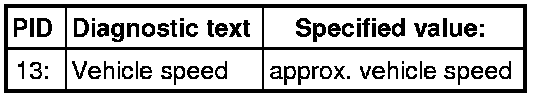

Vehicle Speed Sensor: Testing and Inspection
Diagnostic Procedures
Speed Signal, Checking
Special tools, testers and auxiliary items required
• Multimeter (VAG1526) or Multimeter (VAG1715)
• Connector test kit (VAG1594)
• Wiring diagram
Test requirements
• Fuses in E-box (plenum chamber, left) must be OK:

• Motronic Engine Control Module (ECM) Power Supply Relay (J271) must be OK, check:
• Motronic Engine Control Module (ECM) Power Supply Relay 2 (J670) must be OK, check:
• Control module with indicator unit in instrument panel insert (J285) must be OK.
• Battery voltage must be at least 11.5 volts.
Function test
• To check the speed signal, vehicle must be driven at a speed above 5 km/h.
Observe safety precautions that apply to road tests.
- Connect diagnostic tester.
- Start engine and let run at idle.
- Under address word 33, select "Diagnostic mode 1: Checking measured values."
- Select the measuring value "PID 13: Vehicle speed".
- Perform a road test at a speed above 5 km/h while a 2nd person observes the indication on the display.
- Check specified value of the vehicle speed:

• Vehicle speed must not drop to below 5 km/h during test.
- End road test and switch ignition off.
If no speed is indicated:
- Check wires according to wiring diagram.
Checking wiring
- Connect test box to control module wiring harness , connect test box for wiring test.
- Remove instrument cluster.
- Check wire connection from Engine Control Module (ECM) to Control module with indicator unit in instrument panel insert (J285) according to wiring diagram:
Final Procedures
After the repair work, the following work steps must be performed in the following sequence:
1. Check the DTC memory. Refer to --> [ Diagnostic Mode 03 - Read DTC Memory ] Diagnostic Modes 01 - 09.
2. If necessary, erase the DTC memory. Refer to --> [ Diagnostic Mode 04 - Erase DTC Memory ] Diagnostic Modes 01 - 09.
3. If the DTC memory was erased, generate readiness code. Refer to --> [ Readiness Code ] Monitors, Trips, Drive Cycles and Readiness Codes.